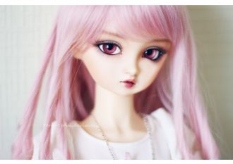
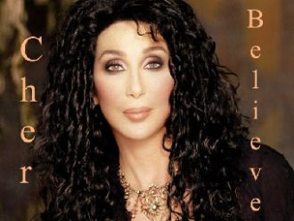

Τι έπαθα ξαφνικά έχω αρρωστήσειΣε είδα με μια μάτια και έχω ποιά κολλήσειΣε βλέπω και φαντάζομαι στα χείλη σου να λιώνω
Я стояла на краю земли,Больше точно не могу лететь,И уходят наши корабли,Нам уже, наверно, не успетьЭту песню нам вдвоём напеть

I wanna dance by water 'neath the Mexican skyDrink some Margaritas by a string of blue lightsListen to the Mariachi play at midnight
Come on, come onOhh, whow
Elle a de ces lumières au fond des yeuxQui rendent aveugles ou amoureuxElle a des gestes de parfumQui rendent bête ou rendent chien
辛子色のシャツ追いながら飛び乗った電車のドアいけないと知りながら 振り向けば隠れた街は色づいたクレヨン画 涙まで染めて走る年上の人に会う 約束と知っててSeptember そしてあなたはSeptember 秋に変わった
Like a movie scene In the sweetest dreams Have pictured us together Now to feel your lips On my fingertips I have to say is even better
Oh the weather outside is frightful, But the fire is so delightful,And since we've no place to go,Let It Snow! Let It Snow! Let It Snow!
Gözyaşım kederden miydi yarimÇektiğim kaderden miydiİçtim hep ona sarıldım yarimTek dostum kadehler miydi Adını dağlara yazdım yarim
What on earth am I meant to do In this crowded place there is only you Was gonna leave now I have to stay You have taken my breath away
Sono umane situazioniquei momenti fra di noii distacchi e i ritornida capirci niente poigià... come vedisto pensando a te...
Кто тебя создал такую?Я гляжу и взор ликует...Ты как-будто вся из сказки.
Пусть говорят, мы редко видимся с тобой,В сердце всегда ты со мной, ты со мной.Пусть говорят, что не судьба нам быть вдвоём -
Текут года, блестит вода. Мы словно в зеркало, видим в ней себя. В твоей руке моя рука,И счастлив я, что нашел тебя.

(After love after love...)
Da bambino io sognaidivi eroi e marinainella mente avevo giàla mia idea di libertà.La bambina che era in meora è donna insieme a te
Κάθε φορά που σε κοιτώθέλω να σου πω όσα δεν είπαπως παραδόθηκα εγώσ' αυτό το χωρισμό
В этот серый, скучный вечерЯ тебя случайно встретил,Я позвал тебя с собоюИ назвал тебя судьбою.У тебя глаза, как море,
Расскажи мне всё, сны уходят в никуда,И слова текут как под пальцами вода..Я смотрю на дождь, он обманывает нас
If I had another chance tonight
I'd try to tell you that the things
we had were right